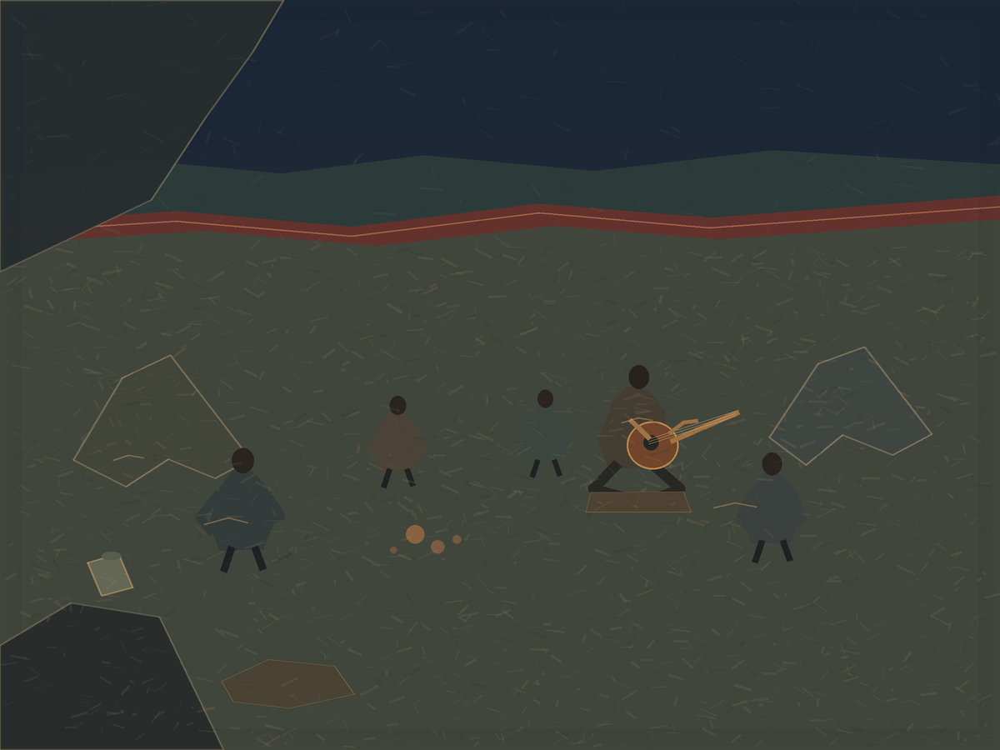

A Night’s Common
Digital painting, 1200 × 900
At night, people gather around a guitar in the roadside camp of Chapter 17 of John Steinbeck’s The Grapes of Wrath. The listeners arrive at different distances; the circle stays open toward the road. This is a painting of the novel’s recurring fictional scene, not a historical camp or a documentary map.